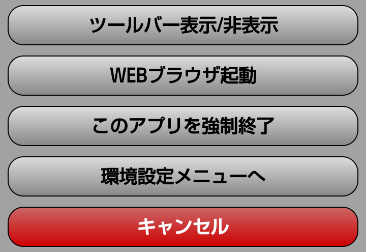

Google Japan 世界一の検索エンジン、ご存知グーグルです
Yahoo Japan ポータルサイトと言えば日本では、これ
VASDAQ.TV ワールドニュース フルスクリーンモード（横画面）でご覧ください
VASDAQ.TV アンケートフォーム オペレーションモードでご覧ください
| オプションメニュー | メニュー | 説明 |
|---|---|---|
|  | ||
| ツールバー表示/非表示 | ホーム、戻る、進む、再読み込み、読み込み中止等のツールバーを表示します | |
| WEBブラウザを起動 | 現在表示しているURLで、WEBブラウザを起動します（コランダムホームは、セキュリティ上表示出来ません） | |
| このアプリを強制終了 | カスタムブラウザ コランダムを強制終了します | |
| 環境設定メニューへ | コランダムメニュー画面へ移動します。各種環境設定はこちらからどうぞ | |
| キャンセル | オプションメニューを何も実行したくない時はキャンセルボタンで元の画面に戻ります |
他にも、「コランダム」では、ホームボタンによる終了抑制や、スクリーンセーバー機能、起動アイコン作成など、様々なWebアプリ開発メニューがあります。